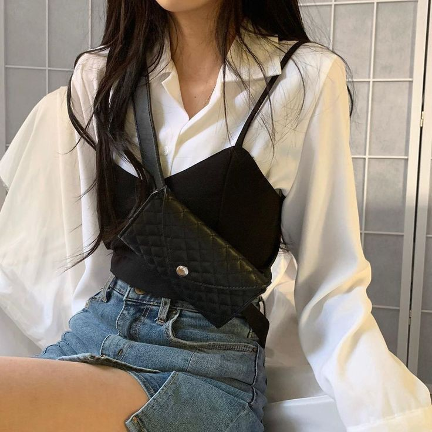

8 Fashion Tips for Styling Fall Outfits

Consider these fall outfit ideas to help you transition between seasons.
1. Invest in a go-to piece of fall outerwear.
Whether it's a denim jacket, a plaid flannel shirt, a cashmere cardigan, a trench coat, or a leather jacket, a versatile piece of outerwear is the most important part of your fall wardrobe. For easy layering, choose something lightweight enough to stuff in a tote or wrap around your waist. Your fall coat doesn't have to be as warm as your winter coat, so take this opportunity to play with fashion trends.
2. Find the perfect pair of fall boots
When the weather turns cooler, it's time to swap your sandals for boots and booties, which signal the coming of winter. Pair suede ankle boots, heeled knee-high boots, or combat boots with a summer dress or denim skirt for a fall-ready look.
3. Dress up a little for work
Fall is a great time to bring suits and other workwear staples back into rotation after a summer of dressing more casually. Ease the transition by pairing a blazer with a fitted white T-shirt and a flowy midi skirt cinched with a belt.
4. Pair a summer piece with something
Most of your summer pieces can work for fall with a little layering. Try a slip dress over a black turtleneck and leggings, and wear your crop tops with high-waisted jeans and a cardigan. Almost any summer dress can be layered over a short- or long-sleeve top (depending on where you live) to keep you warm. Tank tops can work when layered under a long cardigan or oversize button-down.
5. Pair a winter piece with something summery
Fall is the time to embrace cozy winter basics like turtleneck sweaters, shearling jackets, and corduroy pants. Pair cool-weather tops, like oversize blazers and chunky knits, with warm-weather bottoms, like Bermuda shorts and midi skirts, and vice-versa (try a silk cami with wool pants) to avoid overheating.
6. Wear cotton clothing
Cotton is one of the most reliable fabrics in the textile industry and frequently used fabric for fall clothing. While cotton fabrics like flannel, corduroy, and denim can be too heavy for summer and too slow to dry for rainy winter and spring, they're perfect for the dry, windy weather of fall. Keep in mind that wide-leg jeans allow for more airflow (better for warmer climates) while straight-leg and skinny jeans prevent wind chill (better for cooler weather).
7. Choose striking colors
Fall colors look great on trees, but the idea that you should color your wardrobe to fit the season is definitely outdated. You don't have to wear burnt orange or dress in the color of a pecan pie—wear the colors that make you feel great. If you stuck to light colors all summer to beat the heat, consider bringing in bright hues and darker neutrals for fall.
Play with prints and patterns
Fall is an especially great time to play with leopard print, plaid, and other patterns since you'll be wearing more layers than you would in spring, but your look won't be hidden underneath a big winter coat. Anchor your patterned look with neutral basics like denim and leather. For example, you can recycle summery, feminine florals in the fall by pairing them with black combat boots and a denim or leather jacket.
<< 4 CASUAL FALL OUTFIT IDEAS